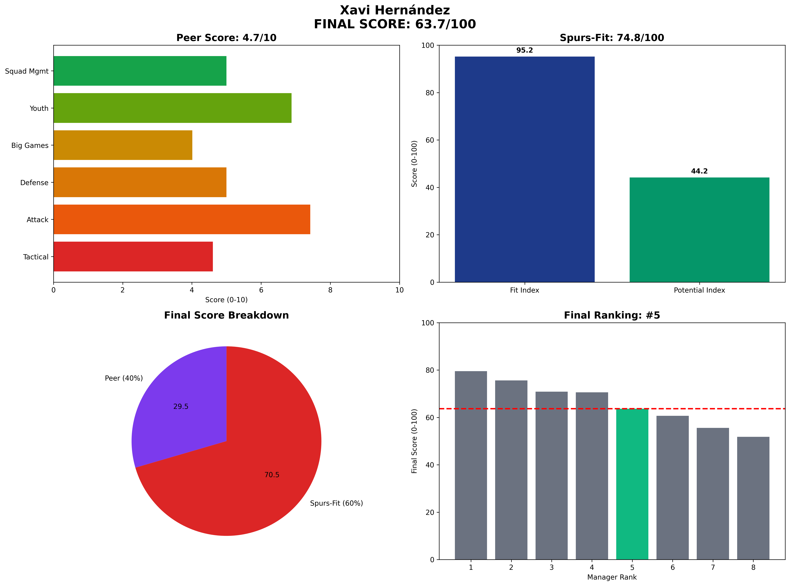

Xavi Hernández - Manager Analysis Report
Executive Summary
Final Score: 63.7/100 (Peer 4.7/10 • Spurs-Fit 74.8/100)
Rank: #5 of 8
Xavi Hernández represents the flawed visionary with temperament concerns
Visual Profile

Comprehensive radar chart showing Xavi's unified final scoring breakdown. His #5 ranking (63.7/100) reflects high tactical fit but catastrophic potential metrics and temperament red flags.
Unified Final Scoring Breakdown
Peer Analysis (40% of Final Score): 4.7/10
- Peer Ranking: #6 of 8
- Tactical Style: 4.6/10
- Attacking Potency: 7.4/10
- Defensive Solidity: 5.0/10
- Big Game Performance: 4.0/10
- Youth Development: 6.9/10
- Squad Management: 5.0/10
Spurs-Fit Analysis (60% of Final Score): 74.8/100
Fit Index (60% of Spurs-Fit): 95.2/100
- Front-Foot Play Alignment: ✅ Strong
- Youth Development Focus: ✅ Strong
- Talent Inflation Capability: ✅ Strong
- Big Game Mentality: ❌ Weak
Potential Index (40% of Spurs-Fit): 44.2/100
- Age Factor: ✅ Strong (Age 44)
- 3-Year Performance Trend: ⚠️ Concern
- Resource Leverage: ❌ Weak
- Temperament: ⚠️ Concern
Key Performance Indicators
Tactical Metrics
- PPDA: 8.2 (lower = more aggressive)
- OPPDA: 12.4 (higher = forces opponent pressure)
- High Press Regains/90: 6.5
Financial Profile
- Net Spend: £70M
- Squad Value Change: £70M
- Transfer Efficiency: Poor
Squad Development
- U23 Minutes %: 22%
- Academy Debuts: 6
- Player Availability: 85%
Strategic Assessment
Strengths
• Elite attacking philosophy
• Strong youth development metrics
• High technical standards
• Barcelona pedigree
Concerns
• Worst potential trajectory
• Temperament instability
• Media volatility
• Squad management failures
Spurs Fit Analysis
High fit scores undermined by catastrophic potential metrics and temperament red flags.
Recommendation
NOT RECOMMENDED - Talent offset by significant character concerns.
Analysis based on 2025-06-07
Methodology: 40% Peer-Normalized Analysis + 60% Spurs-Specific Fit Model